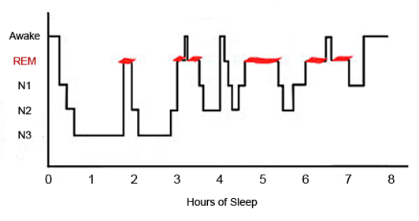
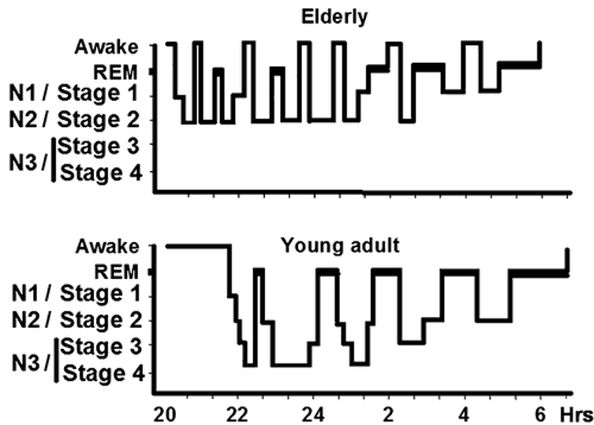

為什麼我會睡不好？
簡易版洪成志醫師(2026/2/25)）
很多病友來到診間，帶著極大的期望問我：「醫師，能不能幫我排個檢查，找出我睡不好的原因？」或者認為：「不是有睡眠實驗室嗎？用儀器測一下不就知道了？」
🛑 破解迷思：儀器不是萬能的
事實上，目前醫學上 並沒有任何儀器可以直接「找出」失眠的原因。
- 睡眠實驗室在做什麼？ 睡眠生理檢查（PSG）核心目標是偵測「睡眠呼吸中止症」或肢體抽動問題。
- 呼吸中止症只是冰山一角： 它只佔失眠原因的一小部分。
- 大多數失眠測不出來： 壓力、情緒、壞習慣導致的失眠，無法靠儀器診斷，而是要靠醫師與您的深度對談。
📊 視覺化解析：為什麼「睡不好」有時是正常的？
在尋找原因前，我們必須先理解：睡眠不是「關機」，而是一連串複雜的週期轉換。
1. 認識你的睡眠結構
睡眠並非一覺到底，而是由非快速動眼期（NREM，分為三階段）與快速動眼期（REM）組成的循環。請參考下圖，健康的睡眠應該包含這些階段的交替：

▲ 睡眠結構圖：健康的睡眠是由不同深度的階段循環組成。
- 淺層睡眠（N1, N2）： 佔了大部分時間。
- 深層睡眠（N3）： 身體修復、免疫力提升的關鍵期，也是我們覺得「睡得沉」的階段。
- 快速動眼期（REM）： 整理記憶、處理情緒（做夢）的時期。
2. 老人 vs 年輕人：生理時鐘的自然衰老
很多長輩抱怨「早醒」或「睡不深」，其實這往往是生理結構的改變。透過下圖比較，我們可以清楚看到年齡對睡眠的影響：

▲ 年齡對比圖：隨著年紀增長，深層睡眠自然減少，醒來次數增加。
從圖中我們可以發現長者睡眠的幾個特徵：
- 結構破碎化（醒來次數變多）： 隨著年齡增長，圖中紅色的「醒來（Wake）」區域變多了。這就是為什麼長輩更容易被微小的聲音吵醒，並覺得自己「沒睡好」。
- 深層睡眠減少： 老年人的 N3（深層睡眠）階段明顯比年輕人少很多。
- 生理時鐘提前： 老人家傾向早睡早起，如果您晚上 8 點就坐在沙發打瞌睡，凌晨 3 點醒來其實是正常的生理反應，並非真的失眠。
洪醫師觀點： 如果您因為年齡增長而睡眠變淺，但白天精神尚可，這可能只是正常的生理變化，不需要過度恐慌，也不一定需要依賴藥物。
🕵️ 除了年齡，原因還在哪裡？
理解了正常的生理變化後，若您的失眠依然嚴重，原因往往是大腦與生活模式發出的「綜合警報」，我們可以歸納為以下三大類：
1. 心理與情緒因素：大腦的「過熱」狀態
- 焦慮與憂鬱： 負面情緒讓神經系統維持在高張力狀態。
- 對失眠的焦慮： 越想睡，越擔心明天沒體力，這種心理壓力反而變成了失眠的「強心針」。
2. 生活方式與知識誤區：不經意的小習慣
- 酒精迷思： 很多人以為喝酒好睡，其實酒精會破壞睡眠結構，讓後半夜更容易醒來。
- 作息不規律： 混亂的生理時鐘讓大腦不知道何時該休息。
3. 醫學因素：身體的連鎖反應
- 生理不適： 如慢性疼痛、胃食道逆流、內分泌失調（甲狀腺亢進、更年期症候群）等，都會干擾睡眠。
🩺 洪醫師的真心話： 「最好的『睡眠檢查儀器』，其實就是您的生活觀察與詳細病史。在『舒眠』診所，我們不依賴冰冷的機器，而是透過深度的對談，陪您區分哪些是『自然的衰老』，哪些是『可以被治療的疾病』。理解睡眠結構，是找回好眠的第一步。」